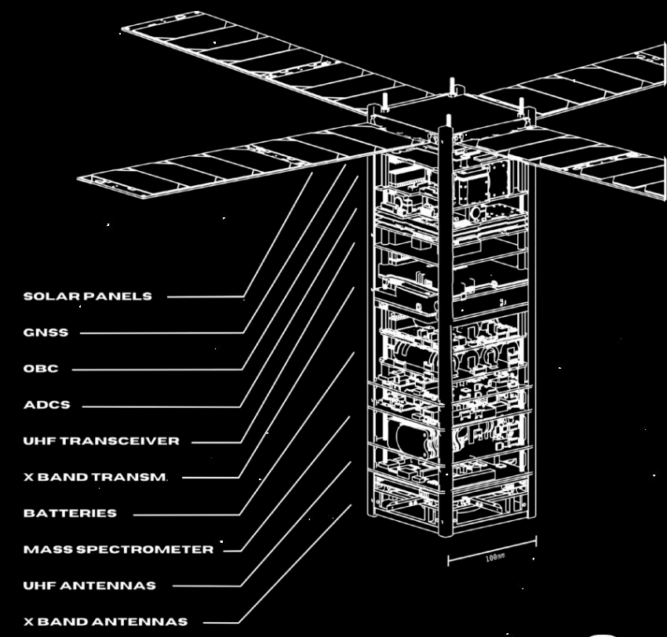
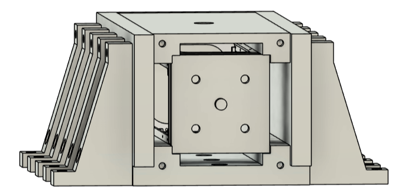
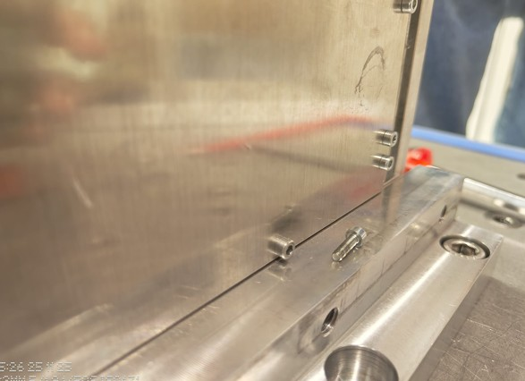
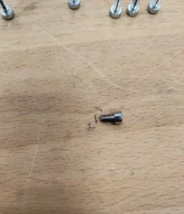
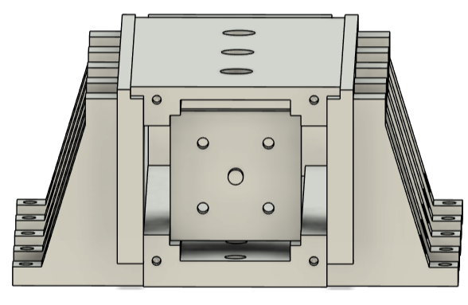
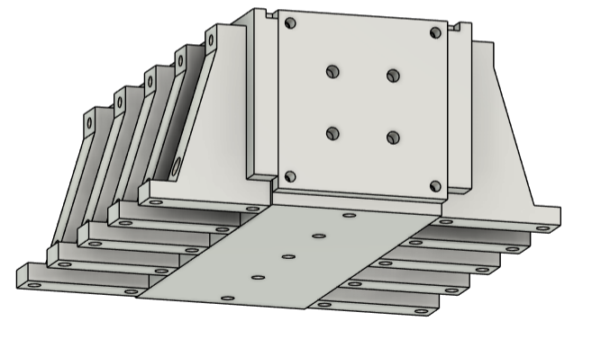
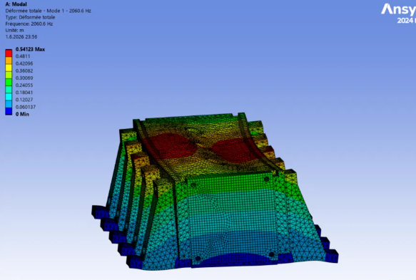
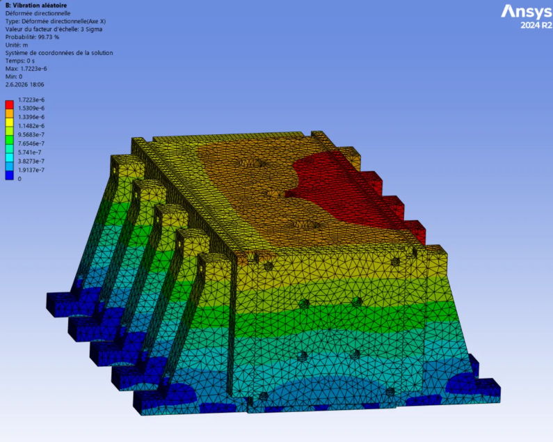

A full mechanical redesign of the EPFL Spacecraft Team's 3U CubeSat qualification dispenser, developed from failure analysis and requirements through CAD, FEM verification, manufacturing, and preparation for vibration testing.
The EPFL Spacecraft Team is a student association with more than 80 active members, five academic partners, and over twelve years of accumulated expertise. Its goal is to strengthen the Swiss space ecosystem by giving students responsibility across the complete lifecycle of real space missions, from systems engineering and subsystem design to manufacturing, testing, operations, and data analysis.
CHESS, the Constellation of High-Energy Swiss Satellites, is the team's flagship mission. It consists of two 3U CubeSats designed to study the Earth's exosphere and ionosphere from complementary orbits. The spacecraft combine scientific payloads from ETH Zurich, the University of Bern, and NovoViz with an onboard computer, electrical power system, and attitude-control system developed by the team.
The programme progresses through three pathfinder satellites of increasing complexity. The qualification dispenser supports this mission by enabling mechanically representative vibration testing of the Pathfinder 0 satellite before flight.

Before flight hardware can be approved for launch, it must survive environmental tests that reproduce the vibration and dynamic loads of ascent. A qualification dispenser is the structural fixture between the CubeSat and the shaker table. It must reproduce the flight dispenser's boundary conditions without adding resonances that distort the satellite's measured response.
The first in-house prototype could not support the official CHESS campaign. Its resonant modes fell inside the test frequency range, fasteners loosened or stripped during vibration, and incorrect cavity tolerances prevented smooth insertion of the CubeSat mass model.



The previous open frame was replaced by a closed-box architecture that increases bending and torsional stiffness. The inner walls now serve directly as CubeSat rail guides, combining structural and interface functions in the same machined geometry.


The redesigned assembly was verified in Ansys Mechanical 2024 R2 using a 4 mm tetrahedral mesh with 243,914 nodes and 125,994 elements. The 25 M10 shaker-table bolt holes were fixed to reproduce the test boundary condition.
Modal analysis placed the first natural frequency at 2060.6 Hz, exceeding the 2000 Hz requirement with a 3.0% margin. Random-vibration analysis used the 14.1 g qualification profile, and a separate 20 g quasi-static analysis verified strength and displacement along the deployment axis.
| Analysis | Result |
|---|---|
| Mode 1 (top plate bending) | 2060.6 Hz, requirement >2000 Hz, MOS +3.0% |
| Mode 2 (pusher plate) | 2355.8 Hz |
| Mode 3 (side panel) | 2981.8 Hz |
| Random vibration profile | 14.1 g rms, 3σ evaluation (NASA GEVS) |
| Peak random-vibration stress | 56.9 MPa on mass model, MOS +7.84 |
| Quasi-static load | 20 g along deployment axis |
| Quasi-static mean stress | 9.09 MPa, MOS +43.2 |
| Maximum quasi-static displacement | 0.128 mm |


The dispenser consists of 17 CNC-machined Al7075-T6 parts. Manufacturing documentation defines critical flatness, the 80 mm shaker-table grid, Helicoil installation, surface finish, and post-treatment dimensions. Fit checks verify that the CubeSat mass model slides freely under its own weight and seats repeatably against the spring-loaded pusher plate.
The vibration campaign is planned on a three-axis electrodynamic shaker table at the University of Bern. Control and response accelerometers will measure input loads, structural response, and any shift in natural frequency before and after testing.